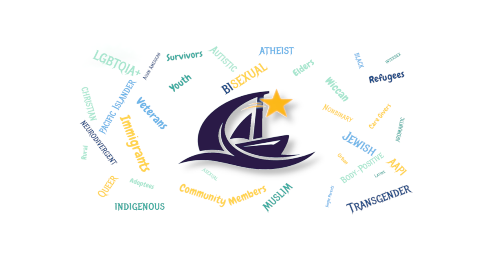

Who We Are
Rising Tide is a community group dedicated to increasing visibility, strengthening connections, and uplifting people marginalized for their identities. We create spaces where everyone is seen, valued, and supported.

Northwest Ohio Visibility Alliance (NOVA)
The Northwest Ohio Visibility Alliance (NOVA) is a Rising Tide initiative focused on visibility, belonging, and community empowerment across Northwest Ohio. NOVA works to ensure that marginalized identities are recognized, respected, and represented in public life.
NOVA is the regional expression of Rising Tide’s mission, bringing visibility efforts, community events, and outreach directly to the people of Northwest Ohio.
Our Vision
A community where people marginalized for their identities come together to broaden society's understanding of normal and build a culture of genuine belonging, visibility, and acceptance.
Our Mission
Rising Tide brings people together through community events, visibility efforts, and public awareness rallies that celebrate diverse identities and expand society's sense of normal, creating a culture where everyone is fully seen, valued, and belongs.
What We Do
Through events, outreach, education, and community-building, we work to create spaces where people can connect, be visible, and feel supported. Our work includes:
- Community gatherings and social events
- Visibility and awareness campaigns
- Public rallies and outreach efforts
- Support networks and resource sharing
Leadership
Meet the people guiding Rising Tide and NOVA. Visit our Leadership page.